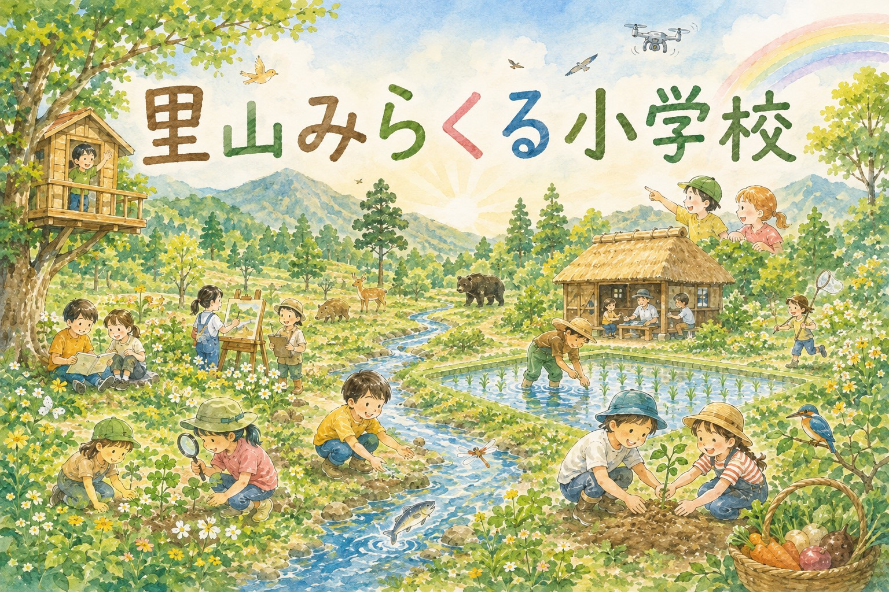

誰かに、伝える
公開授業や活動情報を家族・友人へ。InstagramやYouTubeの投稿をシェアして、学びとの出会いを広げてください。
活動を見てみるSATOYAMA MIRACLE SCHOOL
応援・寄付のご案内
山や川、田んぼや森。
子どもたちが、自然と出会う場所を。
一人ひとりの応援が、次の学びにつながります。
金額に決まりはありません。無理のないかたちで。

里山を教科書に、いのちを先生に。
この学校を、一緒に育ててください
里山みらくる小学校は、決まった校舎を持たない、全国に開かれた学びの場です。山や川、田んぼや森、地域の暮らしを教室に、それぞれの場所からつながっています。
人も、生き物も、同じ地球に生きる仲間。そのことを子どもたちと一緒に感じ、考える公開授業を、住む地域や環境にかかわらず、できる限り誰でも参加できるかたちで届け続けたいと考えています。
大きな支援でなくても構いません。
一人ひとりの小さな応援が、
子どもたちの新しい学びの場を育てます。
寄付の使い道
お預かりした寄付は、里山みらくる小学校の活動を続け、広げていくために活用します。
公開授業の企画・運営や、講師を招く費用に。教材・ワークシートづくりを支えます。
Zoom・YouTubeなどの配信環境の整備に。撮影や編集、活動の記録・発信を支えます。
自然体験やフィールド活動に。事務・広報などの学校運営と、これからの学びの場づくりを支えます。
活動の様子や寄付の使い道は、公式InstagramやLINEオープンチャットなどで随時ご報告します。
寄付で応援する
寄付は、里山みらくる小学校の団体口座への銀行振込で受け付けています。
金額に決まりはありません。
無理のない範囲で応援していただけたらうれしいです。寄付は任意です。
振込手数料は、ご負担をお願いいたします。
寄付について問い合わせるお振込の際は、表示される口座名義をご確認ください。
いろいろな応援のかたち
寄付をしなくても、応援できます。あなたの得意なことや、身近なつながりも、学校の力になります。
公開授業や活動情報を家族・友人へ。InstagramやYouTubeの投稿をシェアして、学びとの出会いを広げてください。
活動を見てみる授業やイベントの運営、写真・映像・デザイン。会場や物品、体験の機会の提供など、さまざまな協力を歓迎します。
協力について相談する子どもたちや親子を活動へ。学校・フリースクール・地域団体・企業・行政とのつながりも、次の学びのきっかけになります。
連携について相談するいま育っている、学びの場
2026年12月26日・27日は、淡路島修学旅行。ヤギ牧場で遊び、野菜を収穫し、ごはんをつくる。子どもたちの「やってみたい」を、仲間と一緒に育てています。
淡路島修学旅行を見る
参加する・問い合わせる
寄付・協賛・運営協力・連携については、お気軽にご連絡ください。